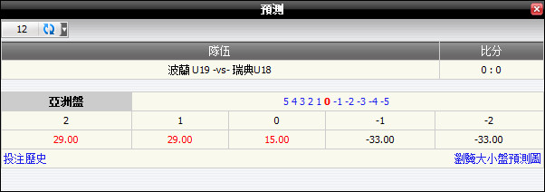
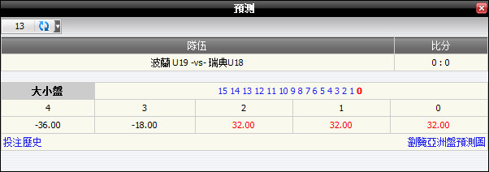

亞洲盤/ 大小/ 滾球
定義:
顯示基於注單佔成數的總代理輸贏, 投注類型為上半場或全場亞洲盤/ 大小/ 滾球 (圖1.1)。
圖 1.1
與國際友誼賽, 會員投注於賽事波蘭 U19 -vs- 瑞典 U18, 詳情如下:
-
第一投注: 投注額 = 110, 賠率= 0.88, 投注類型: 亞洲盤, 全場, 總代理佔成 = 30%。.
--> 總代理基於佔成數的所得 = -(投注額 * 佔成數) * 1 = -110*30%*1 = 33
-
第二投注: 投注額 = 120, 賠率 = 0.88, 投注類型: 大小, 全場, 總代理佔成= 30%.
--> 總代理基於佔成數的所得 = -(基於佔成數 * 佔成數) * 1 = -120*30%*1 = -36
注:
- 總代理於基於佔成數的所得亞洲盤 = (主隊總投注額 - 客隊總投注額) * 總代理佔成。
- 總代理基於佔成數的所得於大小盤 = (大盤總投注額 - 小盤總投注額) * 總代理佔成。
- 標記"-" 是指客隊/小盤之總投注額大於主隊/大盤之總投注額。
- 若賠率絕對值< 1 那麼總代理所得數額 = 投注額 * 總代理佔成* 1。
- 若賠率絕對值> 1 那麼總代理所得數額 = 投注額 * 總代理佔成* |賠率|。
預測功能
此功能幫助總代理根據主隊比分, 客隊比分演算輸贏數額。要查看輸贏預測, 點擊 "+" 標記。
圖 1.2
-
全場亞洲盤: 在這個例子中, member1 投注110於 波蘭 U19 0.25, 賠率 = 0.88, 投注類型 = 全場亞洲盤, 總代理佔成 = 30%。

圖 1.3
這是亞洲盤預測, 詳情如下:
- -2: -33 --> 若(主隊比分- 客隊比分) = -2 那麼總代理將贏取: -110*30%*1 = -33
- -1: -33 --> 若(主隊比分- 客隊比分) = -1 那麼總代理將贏取: -110*30*1 = -33
- 0: 15 --> 若(主隊比分- 客隊比分) = 0 那麼總代理會輸 1/2: 110*30%*0.88*1/2 = 15
- 1: 29 --> 若(主隊比分- 客隊比分) = 1 那麼總代理會輸: 110*30%*0.88 = 29
- 2: 29 --> 若(主隊比分- 客隊比分) = 2 那麼總代理會輸: 110*30%*0.88 = 29
-
全場大小: 在這個例子中, member1投注於120於小盤 2.75, 賠率 = 0.88, 投注類型 = 全場大小, 總代理佔成=30%。

圖 1.4
這是大小盤預測, 詳情如下:
- 0: 32 --> 若(主隊比分+ 客隊比分) = 0 那麼總代理會輸: 120*30%*0.88 = 32
- 1: 32 --> 若(主隊比分+ 客隊比分) = 1 那麼總代理會輸: 120*30%*0.88 = 32
- 2: 32 --> 若(主隊比分+ 客隊比分) = 2 那麼總代理會輸: 120*30%*0.88 = 32
- 3: -18 --> 若(主隊比分+ 客隊比分) = 3 那麼總代理將贏取: -120*30%*1/2 = -18
- 4: -36 --> 若(主隊比分+ 客隊比分) = 4 那麼總代理將贏取: -120*30%*1 = -36
注:
- 若 賠率 < 0
- 如果會員贏那麼賠率 = 1。
- 如果會員輸那麼賠率 = |當前賠率|。
- 若 賠率 > 0
- 如果會員贏那麼賠率 = 當前賠率。
- 如果會員輸那麼賠率 = 1。